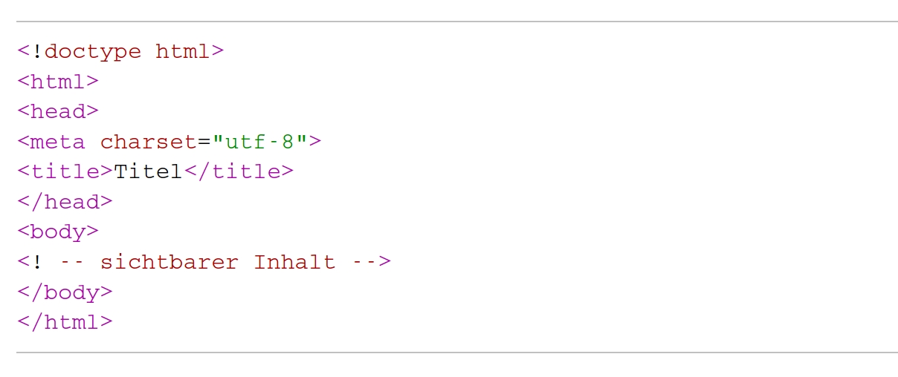
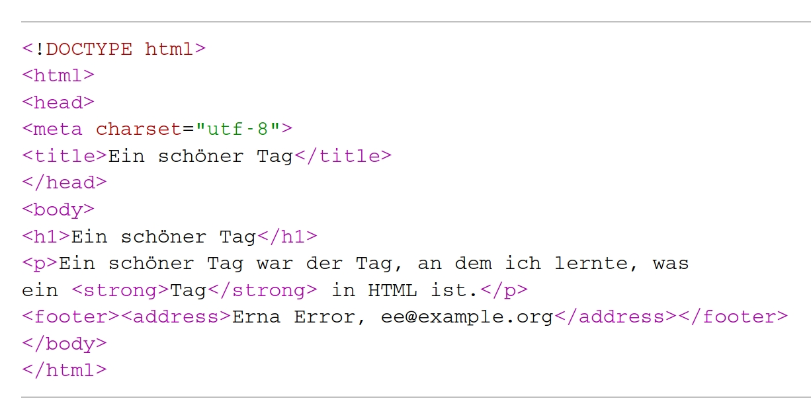
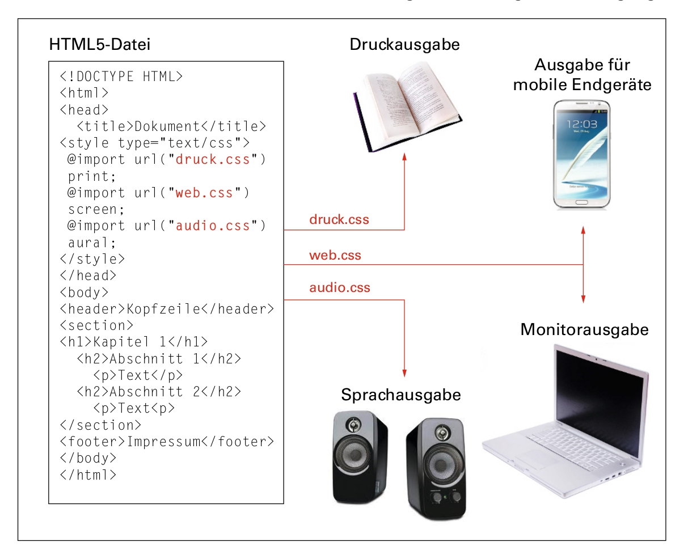

# Grundlagen von HTML (E02) <br/> <br/> <hr/> <br/>Prof. Dr. Christof Schöch <br/> <br/> <hr/> <p><strong>Modul Auszeichnungssprachen<br/>MSc. Digital Humanities, Universität Trier</strong></p> <hr/> <img height="60" data-src="img/basics/uni-trier.png"> :: - Ziele dieser Sitzung: - Grundlagen von HTML vermitteln - Mehr noch: Orientierungswissen vermitteln: wo selbst lernen? -- ## Überblick 1. [Geschichte von HTML](#/2) 1. [HTML 101](#/3) 1. [Informationsquellen](#/4) 1. [Through the Rabbit Hole](#/5) -- ## (1) Geschichte von HTML --- ### Tim Berners-Lee <p>HTML: HyperText Markup Language</p> <p><a href="http://info.cern.ch/hypertext/WWW/TheProject.html">http://info.cern.ch/hypertext/WWW/TheProject.html</a></p> <small>(Bildquelle: Dries Buytaert, <a href="https://dri.es/the-open-web-can-still-win">https://dri.es/the-open-web-can-still-win</a>)</small> :: - Physiker, Mitarbeiter am CERN in den 1980ern - Hatte dort die Idee, Dokumente über Links zu verknüpfen - Hat dafür HTML erfunden - Hypertext: Text mit Hyperlinks; als Links zwischen Dokumenten - Grundlage des WWW - Die Rekonstruktion der Original-Webseite zeigen! --- ### Versionen von HTML * 1989: HTML (erster Vorschlag von TBL) <!-- .element: class="fragment" data-fragment-index="1" --> * 1995: HTML 2.0 (erster offizieller Standard) <!-- .element: class="fragment" data-fragment-index="2" --> * 1996: das W3C übernimmt die Betreuung des Standards <!-- .element: class="fragment" data-fragment-index="3" --> * 1997: HTML 3.0 und HTML 4.0 (letzte Version von HTML) <!-- .element: class="fragment" data-fragment-index="4" --> * 2000: XHTML (separate Sprache; X = eXtensible / basierend auf XML) <!-- .element: class="fragment" data-fragment-index="5" --> * 2014: HTML5 (aktueller Standard; löst HTML 4 und XHTML ab; viele neue Möglichkeiten) <!-- .element: class="fragment" data-fragment-index="6" --> -- ## HTML 101 --- ### Wie funktioniert HTML? * Es ist eine Auszeichnungssprache <!-- .element: class="fragment" data-fragment-index="1" --> * Ein Textinhalt wird mit speziellen Markierungen annotiert / beschrieben * Diese Markierungen werden vom Text durch reservierte Zeichen getrennt * Es gibt vier grundlegende Bausteine <!-- .element: class="fragment" data-fragment-index="2" --> * Strings (Textinhalt) * Elemente (öffnendes, schließendes Tag, Inhalt) * Attribute und Werte (innerhalb eines Elements) * Besonderheiten von HTML <!-- .element: class="fragment" data-fragment-index="3" --> * festes Inventar an Elementen * HTML: Elemente sind teils auf Inhalt/Struktur, teils auf Darstellung bezogen * HTML5: nur noch Inhalt/Struktur, Darstellung komplett in CSS --- ### Beispiel (Fragmente) ``` <h1>Dies ist eine Überschrift ersten Grades</h1> <p>Manche Elemente beschreiben die <emph>Bedeutung</emph> des annotierten Textteils.</p> <p>Andere Elemente beschreiben die <b>Darstellung</b> des annotierten Textteils.</p> <div class="absatz"> <p>Hier ein Beispiel für einen Abschnitt (div) mit Attribut und Wert.</p> </div> <p>Ohne <a href="https://www.trier.de/">Links</a> kommt man nicht aus.</p> ``` :: - spitze Klammern trennen Textinhalt vom Markup - Öffnende vs. schließende Tags - Element: 2 Tags ggfs. mit Attributen und aller Inhalt - Verschachtelung - Syntax von Wert und Attribut --- ### HTML-Gerüst  <small>(Bildquelle: Stefan Münz, *HTML5-Handbuch*, [link](http://webkompetenz.wikidot.com/html-handbuch:dokument-grundgeruest).)</small> :: - doctype declaration: interpretiere das als HTML - Sprache - Character encoding --- ### Einfaches HTML-Dokument  <small>(Bildquelle: Stefan Münz, *HTML5-Handbuch*, [link](http://webkompetenz.wikidot.com/html-handbuch:grammatik-von-html).)</small> --- ### Weitere Features (inkl. HTML5) * Metadaten: `<meta>` * Hyperlinks: `<a href=""></a>` * Navigation: `<nav>` * Bilder: `<img scr="">` und `<canvas>` * Tabellen: `<table>` * Formulare: `<form>` --- ### Ausblick: HTML + CSS  <small>(Bildquelle: Bühler et al., *HTML5 und CSS3*, 2017, S. 12.)</small> -- ## Informationsquellen --- ### Der Klassiker: SelfHTML <a href="https://wiki.selfhtml.org/"></a> <p>https://wiki.selfhtml.org/</p> --- ### HTML5-Handbuch <a href="http://webkompetenz.wikidot.com/docs:html-handbuch"><img height="500" data-src="img/E02/html5-handbuch.jpg"></a> <p>http://webkompetenz.wikidot.com/docs:html-handbuch</p> -- ## Through the Rabbit-Hole --- ### Ein Blick in diese Präsentation * Eigenschaften <!-- .element: class="fragment" data-fragment-index="1" --> * [reveal.js](https://github.com/hakimel/reveal.js/): HTML, CSS und JavaScript * Slides in HTML und/oder Markdown * web-basiert, offene Standards, plattform-unabhängig, Versionierung, plaintext * Speaker view; Links zu bestimmten Seiten; Audio-Einbettung, etc. * Siehe auch <!-- .element: class="fragment" data-fragment-index="2" --> * Ansicht im Browser: https://dh-trier.github.io/markup/E02-Grundlagen-von-HTML.html * Ganzes Repository: https://github.com/dh-trier/markup * Einzelne HTML-Datei (source): view-source:https://dh-trier.github.io/markup/E02-Grundlagen-von-HTML.html -- ## Abschluss --- #### Fragen zur Diskussion 1. Warum sollte man als digitale:r Geisteswissenschaftler:in heute noch HTML lernen? 1. :: - 1. Frage: - Wenn wir XML ins Netz bringen wollen, müssen wir es in HTML transformieren. Dafür muss man das Zielformat kennen. - Die Anforderungen ans Webdesign für Digitale Editionen oder andere Projekte lässt sich meist nicht mit einem CMS und Themes "out of the box" umsetzen --- #### Lektürehinweise * Bühler et al, *HTML5 und CSS3*, 2017 (kompakte Einführung in die Grundlagend) * Stefan Münz, HTML5-Handbuch: http://webkompetenz.wikidot.com/docs:html-handbuch (vertiefend, Handbuch) * SelfHTML: https://wiki.selfhtml.org/(ebenfalls sehr umfassend, ideal zum Nachschauen) -- ## Danke! <br/><br/> <br/><br/> <br/><br/> <hr/> <small> <br/>Lizenz: <a href="https://creativecommons.org/licenses/by/4.0/">Creative Commons Attribution (CC BY)</a>, 2020. </small> <hr/>